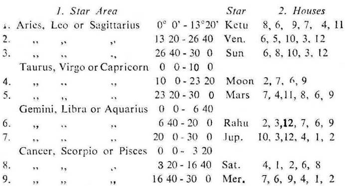
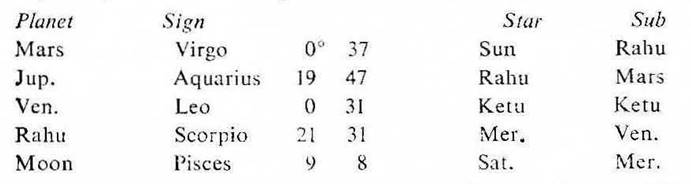

The slow moving planets in transit denote the period in general e.g. Saturn takes about 13 months in one Nakshatra or Constellation or Star; Rahu or Ketu 8 months; while Jupiter takes about 5 months and 10 days. Mars signifies a few days viz. 20 days or so. Mercury and Venus are not uniform in their motion. Sun is very regular in motion and stays in one Nakshatra or Constellation or Star for about 13 days. Moon takes about 24 hours in one Star. Hence the effects of Sun and Moon in transit should be observed in the first instance for future guidance, because they show day to day results.
Amongst the slow moving planets Saturn while transitting through one Nakshatra or Star remains in one Sub Nakshatra or Sub for many weeks. Jupiter, Rahu and Ketu remain in one Sub for many days. So their effects will be felt in general during these times.
Sun remains in one Sub for a period from one to three days; while Moon for about three hours. Sun and Moon show specific effects for a particular day and hour. So they are most important.
1. We may now observe the effects of the transitting planets in this birth map. The table showing the significator planets for each house and that showing the houses signified by each planet are given on the page 15.
2. In this birth map Sun is the significator of 6, 8, 10, 3 and 12. So whenever any planet transits in the star area of Sun (Aries, Leo or Sagittarius 26° 40′ to Taurus, Virgo or Capricorn 10° 0′), it will influence the matters signified by the houses 6, 8, 10, 3 and 12; and so on with other significators as shown in the following table.

Explanation. When any planet transists in the star area of Ketu as shown in column 1, it will influence the houses shown in column 2 against Ketu. When any planet transists in the star area of Saturn as shown in column 1, it will influence the houses shown in column 2 against Saturn and so on.
3 (a) In this birth horoscope general bad health is indicated; and Moon, Rahu and Saturn are the Significators of ill health (i.e. of the house 6).
So the planets transitting in the star area of Moon, Rahu or/and Saturn will affect the health of the native.
(b) In this birth horoscope Moon, Saturn and Rahu are the significators of ill health and their Sub lords are also malefic in effect (being connected with the houses 6 or 8). So Moon, Saturn and Rahu are strongly evil for health.
Hence the planets transitting in the star area of Moon, Saturn or/and Rahu will have worse effects on the health of the native.
(c) In this birth horoscope the native is running the joint period of Rahu, Rahu and Saturn from 18–9–1973 and it continues upto 22–2–1974.
So the planets transitting in the star area of Rahu or/and Saturn will give the same results as indicated by the joint period of Rahu, Rahu and Saturn, if the Sub lords of these transitting planets are not detrimental to the matters indicated by the joint period rulers; e.g. the joint period of Rahu. Rahu and Saturn is not favourable for the health of the native. Hence between 20-11-1973 and 2-12-1973 when Sun was transiting in Scorpio 3°20′ to 16°40′ in the Star of Saturn and in the Subs of Saturn (the significator of 6 and 8), Mercury (the significator of 1 and 6) and Ketu (the significator of the maraka house 7 and the badhaka house 11), the native suffered much from asthamatic condition.
On 23-11-1973 at the time when Moon was transiting in Libra 22°41′ in the Sub of Saturn and onward the native suffered from acute asthamatic condition. It continued till Moon in Scorpio crossed the star area of Saturn.
Further as soon as Sun in Scorpio crossed the star area of Saturn and entered the star area of Mercury on 2-12-1973 the native was getting better.
(d) In this birth horoscope the native is running the joint period of Rahu, Rahu and Ketu from 10-7-1974 upto 7-9-1974.
So the planets transiting in the star area of Rahu or/and Ketu will give the same results as indicated by the joint period of Rahu Rahu and Ketu, if the Sub lords of these transiting planets are not detrimental to the matters indicated by the joint period rulers; e.g. these joint period rulers indicate the printing and publication work. Hence the printing work of this book was started on 3-9-1974 during the joint period of Rahu, Rahu, Ketu and Mercury. On that day the position of some planets in transit was as under:

The above transiting planets are either in the Star or Sub of the period, sub period, inter period or sookshma period ruler.
None of the above planets is in the Sub of a planet which is detrimental to the matter (printing and publication) indicated by the joint period rulers.
4. It may be remembered that the sub lord of the transiting planet should be connected with or it should not be detrimental to the matters indicated by the star lord of the transiting planet.
(a) In this birth horoscope it was observed that whenever the native received money from others Sun or/and Moon were transiting in the star area of Mercury or/and Jupiter (the significators of 2), and also Ketu (the significator of 11). These luminaries were at that time in the sub area of Mercury or Jupiter or Ketu or any planet connected with the matter of the houses 2, 6, 10 or 11.
(b) In this birth horoscope it was observed in the past that whenever the work of writing books was going on, the planets were transiting in the star area of Moon or/and Rahu (the significators of 9). It was also continued during the time when the planets were transiting in the star area of Venus or/and Sun (the significators of 3, 10 and 12).
The work of writing was active during the days when Sun or/and Moon were transiting in the star area of Moon or/and Rahu
Many communications and contacts with different persons were made during the days when Sun or/and Moon were transiting in the star area of Venus or/and Sun (the significators of 3 and 10).
It was also observed that when the printing work of books was going on, the planets were transiting in the star area of Ketu or/and Mars (the significators of 9 and 11).
Sun or/and Moon were transiting in the star area of Ketu or/and Mars during the days when the printing work was in full swing.
(c) In this birth horoscope it was observed that whenever the health was bad the planets were transiting in the star area of Moon or/and Rahu and in the sub area of Saturn. It was especially so when Sun or/and Moon were transiting in the star area of Moon/Rahu and in the sub area of Saturn. Sun or/and Moon generally transited in the star and sub area of Saturn when the health was worse.